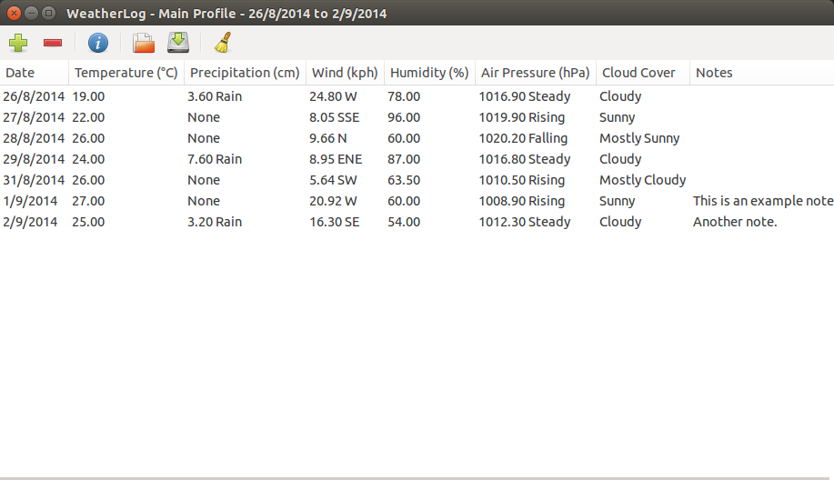

WeatherLog is an application for keeping track of the weather and getting information about past trends.
WeatherLog can organize weather data and present it in a clear, easy to understand manner. It can also show detailed information about patterns and overall info, as well as display graphs to visualize the data.
WeatherLog requires the Python interpreter to run. Development is done using 2.7.x, but it should work with 3.x as well. GTK+ 3 and its Python bindings are also required. The graph features also require Matplotlib.
To run WeatherLog, open a terminal in the directory containing the files and type python weatherlog.py. On some systems double-clicking on the weatherlog.py file will also work.
WeatherLog currently only runs on Linux and Windows. Note that while the application should work on Windows, it is not extensively tested on that platform.
WeatherLog is released under the MIT open source license. See the LICENSE file for more information.
WeatherLog uses python-weather-api to get data from weather APIs. See the README and LICENSE files in weatherlog_resources/dialogs/pywapi for more information.
The program icon is from an icon set by Mr J.